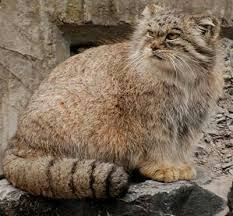
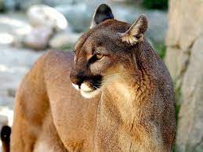
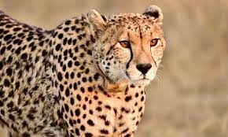

| Felinos | Fotos |
|---|---|
| Leão | |
| Gato de Pallas |  |
| Puma |  |
| Guepardo |  |
Os felinos fazem parte da grande família de mamíferos carnívoros, que vai desde o gato doméstico até o leão. Todos apresentam garras longas e encurvadas e alguns deles possuem unhas retrateis, ou seja, quando o animal as encolhe, elas são envolvidas pelas dobras da pele. As patas da frente têm 5 dedos e as de trás 4. Todos são privilegiados de um ótimo olfato, audição aguda e a capacidade de enxergar muito bem durante a noite. Possuem mais de 500 músculos e mantém o controle sobre todos. Sua espinha é bastante flexível, o que lhes permite subir em árvores com facilidade. As primeiras evidências fósseis de felinos verdadeiros são de 25 milhões de anos atrás, no período Oligoceno. Os primeiros felinos eram os dentes-de-sabre, que faziam parte da subfamília extinta Machairodontinae. Sua pelagem é mais densa em regiões frias, a coloração é variável e encontramos espécies com manchas, rosetas e listas, beneficiando a camuflagem durante a caçada.